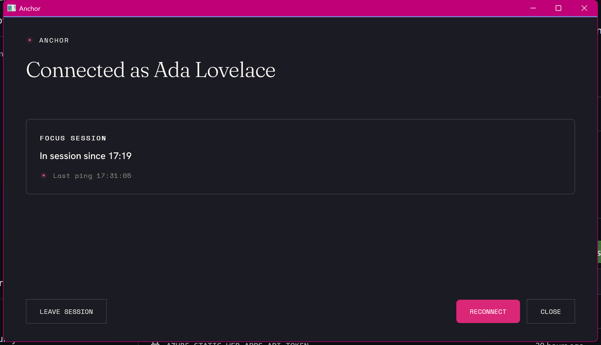

Anchor — open-source classroom focus
Classroom focus, while a lesson lasts — and not a minute longer.
A teacher starts a focus session for a class. For its duration each student device softly keeps to a teacher-defined allowlist, and off-task activity surfaces live on the dashboard. Made by teachers, free and open source for everyone.
Three quiet moves, start to finish.
A teacher starts a session
A teacher opens Anchor and starts a focus session for the class, choosing the allowlist of apps and sites that lesson needs.
Devices keep to the allowlist
Each signed-in student device softly enforces the allowlist. Off-list apps drop to the background; off-list pages show a friendly block page.
Off-task surfaces live
When a device drifts off task it shows on the dashboard in real time — so the teacher can quietly nudge a student back, not police a log later.
What the teacher sees — and what the student sees.



No monitoring, no surveillance
Soft enforcement: off-task is made visible, not impossible.
The agent pulls focus back and surfaces off-list activity, but it does not pretend to be tamper-proof — a motivated student can defeat it, and that is by design. The goal is to make off-task behaviour visible to the teacher, not impossible.
Nothing is recorded between sessions. Anchor only observes while a teacher has a session running, and only the off-list parts; on-allowlist work is never logged. A teacher set this up, it ends when the lesson ends, and the data stays inside the school.
Five small components do the work.
A teacher starts a session from the dashboard. The backend relays it to every signed-in device; each enforces the allowlist locally and reports off-list activity straight back.
Agent
A native Windows tray app. It joins the session, gently pulls focus back from off-list apps, and shows the block overlay.
Edge extension
Filters URLs inside Edge against the session allowlist and shows a friendly block page for off-list pages.
Witness
A native-messaging bridge so the agent and extension watch each other: if either is disabled mid-session, the other reports it.
Dashboard
The teacher's web instrument: start and stop sessions, manage classes and allowlists, and watch live student state.
Backend
Each school self-hosts its own. It relays sessions to devices and stores classes, allowlists and session events — and nothing else.
Made by teachers, free for everyone.
Anchor is GPL-3.0 licensed and self-hostable. Each school runs its own backend; Plink Labs operates none and receives no student data. The full source — including exactly what each component collects — is public and auditable.